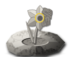

돌이지금 어느 자리에 있을까?
돌이는 싹을 찾아요. 꽃은 이미 된 테마예요.
싹 난 지 7일째
오른 회사가 18곳에서 11곳으로 줄었어요. 다시 번질까?
싹 난 지 9일째
오른 회사가 15곳에서 10곳으로 줄었어요. 다시 번질까?
싹 난 지 8일째
오른 회사가 12곳에서 8곳으로 줄었어요. 다시 번질까?
씨앗 · 콘텐츠 제작씨앗 = 아직 조용하지만 오른 회사가 늘어남. 싹 = 앞 열흘 3% 아래, 뒤 열흘 3% 넘게 오르고 절반 넘게 함께 오름. 꽃 = 한 달 15% 넘게 오름. 시듦 = 크게 올랐다가 닷새 동안 내리고 오른 회사가 줄어듦. 싹 세기는 확인 네 가지 가운데 넷이면 높다, 셋이면 보통이에요.
돌이는 지난 기록으로 찾아요. 될 듯한 곳이지, 될 곳은 아니에요.